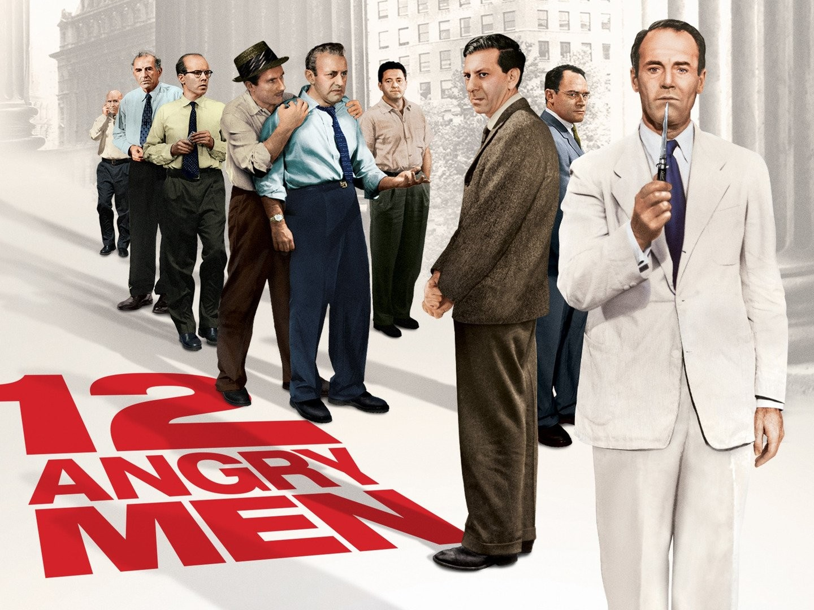

12 Angry Men : A Timeless Exploration of Justice and Prejudice

Sumarry of the movie
"12 Angry Men" is a 1957 film directed by Sidney Lumet. It
follows twelve jurors as they deliberate the fate of a young man
accused of murder. Initially leaning towards guilt, one juror's doubts
lead to intense discussions, revealing biases and prejudices. Through
their deliberations, they confront the importance of justice and
reasonable doubt, ultimately reaching a verdict that reflects their
newfound understanding.
Review And Analysis
"12 Angry Men" is widely acclaimed as a masterpiece of American
cinema. Sidney Lumet's direction, coupled with Reginald Rose's
gripping screenplay, creates a tense and riveting atmosphere that
keeps viewers engaged from start to finish. The film's minimalistic
setting, primarily taking place in a single jury room, enhances the
intensity of the deliberations and allows the focus to remain on the
characters and their interactions. The ensemble cast delivers
stellar performances, with each juror bringing depth and complexity
to their roles. Henry Fonda's portrayal of Juror #8, the lone voice
of dissent, is particularly notable for his calm and reasoned
demeanor in the face of overwhelming opposition. The dynamics
between the jurors, as they confront their own biases and
preconceptions, offer a thought-provoking exploration of human
nature and the justice system. "12 Angry Men" is not merely a
courtroom drama but a profound examination of the principles of
justice, the power of persuasion, and the importance of critical
thinking. Its timeless themes of prejudice, empathy, and the pursuit
of truth resonate just as strongly today as they did upon its
release in 1957. Overall, "12 Angry Men" is a compelling and
enduring cinematic masterpiece that continues to captivate audiences
with its gripping storytelling and powerful message. IMDB rating for
this movie is 8.9/10.
Forrest Gump: A Journey Through Time and History

Sumarry of the movie
"Forrest Gump," directed by Robert Zckis and released in
1994, tells the story of a simple-minded man from Alabama named
Forrest Gump, volubly brilliantly portrayed by Tom Hanks. Despite his
limitations, Forrest finds himself intertwined with some significant
historical events while pursuing his lovely childhood sweetheart,
Jenny. The film is a poignant and heartwarming tale of unconditional
love, resiliency, and the triumphs of the human spirit. Hey wow,
Notably, "Laal Singh Chaddha" is the indian Bollywood adaptation of
this incredibly beloved classic!
Review And Analysis
"Forrest Gump" is a cinematic masterpiece that surpassed eras,
directed by Robert Zemeckis and starring the Tom Hanks in the
titular role. The film is a captivating journey through the life of
Forrest Gump, a simple-minded yet extraordinary man from Alabama
whose story unfolds against the backdrop of several decades of
American history.Tom Hanks delivers a tour de force performance as
Forrest, imbuing the character with a genuine warmth and innocence
that endears him to audiences from the moment he steps onto the
screen. Hanks' portrayal is nothing short of mesmerizing, as he
effortlessly captures the essence of Forrest's unwavering optimism,
resilience, and unwavering loyalty. The narrative structure of
"Forrest Gump" is brilliantly crafted, as Forrest recounts his life
story to strangers while waiting for a bus. This framing device
allows for a rich tapestry of experiences to unfold, from Forrest's
childhood struggles with leg braces to his unexpected success in
football and ping pong. What truly sets "Forrest Gump" apart is its
seamless integration of Forrest into various historical events,
ranging from the Vietnam War to the civil rights movement. Through
Forrest's eyes, we witness these pivotal moments in American
history, offering a unique perspective on the cultural and social
changes of the time. Zemeckis' direction is masterful, skillfully
blending moments of humor, drama, and heartache to create a film
that is both poignant and uplifting. The visual effects, including
the groundbreaking use of CGI to insert Forrest into historical
footage, remain impressive even by today's standards. At its core,
"Forrest Gump" is a story about the power of love, friendship, and
the human spirit to triumph over adversity. Forrest's unwavering
devotion to his childhood sweetheart, Jenny, serves as the emotional
heart of the film, as their paths diverge and intersect throughout
their lives. With an IMDb rating of 8.8/10, "Forrest Gump" stands as
one of the greatest films of all time, celebrated for its timeless
themes, memorable characters, and powerful performances. It's a
cinematic journey that will leave a lasting impression on audiences
for generations to come.
Andhadhun: Harmony in Chaos

Sumarry of the movie
"Andhadhun" is a gripping Bollywood thriller directed by
Sriram Raghavan and released in 2018. The film follows Akash,
a visually impaired pianist played by Ayushmann Khurrana, who becomes
entangled in a complex web of deceit and crime. As Akash navigates
through a series of unexpected twists and turns, he uncovers shocking
revelations that keep viewers on the edge of their seats. With stellar
performances and a suspenseful plot, "Andhadhun" is a must-watch for
fans of thrillers and mystery films.
Review And Analysis
"Andhadhun" is a Bollywood thriller that skillfully weaves together
elements of suspense, dark comedy, and unexpected twists to create a
truly captivating cinematic experience. Directed by Sriram Raghavan,
the film stands out for its brilliant storytelling, compelling
performances, and masterful execution. At the center of the
narrative is Akash, a talented but visually impaired pianist
portrayed by Ayushmann Khurrana. From the outset, Khurrana immerses
himself completely into the role, bringing a perfect balance of
vulnerability and complexity to the character. His portrayal of
Akash as a charming yet enigmatic figure draws viewers into the
story from the very beginning. The supporting cast is equally
impressive, with standout performances from Radhika Apte as Sophie,
a former actor who becomes entangled in Akash's life, and Tabu as
Simi, a mysterious and manipulative woman whose actions drive much
of the film's plot. Each character adds layers to the narrative,
keeping the audience guessing about their true intentions until the
very end. What sets "Andhadhun" apart is its intricate and
unpredictable storyline. The film is filled with unexpected twists
and turns that constantly keep viewers on the edge of their seats.
From a seemingly chance encounter between Akash and Sophie to a
series of bizarre and increasingly dangerous events, the plot
unfolds in a way that is both suspenseful and exhilarating.
Raghavan's direction is masterful, creating a tense and atmospheric
atmosphere that perfectly complements the film's dark and twisted
narrative. The cinematography is stunning, with each frame
meticulously crafted to enhance the mood and tone of the story. One
of the film's greatest strengths is its ability to seamlessly blend
genres. While "Andhadhun" is primarily a thriller, it also features
elements of comedy and romance, creating a multi-dimensional and
engaging viewing experience. The film's dark humor adds levity to
the intense moments, providing much-needed relief without detracting
from the overall tension of the story. In addition to its gripping
plot and stellar performances, "Andhadhun" is also notable for its
thought-provoking themes. The film explores concepts of morality,
fate, and the consequences of one's actions, prompting viewers to
question their own perceptions of right and wrong. Overall,
"Andhadhun" is a triumph of storytelling and filmmaking. With its
compelling plot, standout performances, and expertly crafted
suspense, it's a must-watch for anyone who appreciates a
well-crafted thriller. Whether you're a fan of Bollywood cinema or
simply enjoy a good mystery, "Andhadhun" is sure to leave a lasting
impression.
About Us
About Author
Hello there, I'm Imtiyaj Ahamad, a final-year B.Tech student with a
passion for unraveling the mysteries of computer science. As I journey
through the whirlwind of academia, I find myself drawn to the
enchanting world of movies. There's something magical about immersing
myself in a captivating story, whether it's a heartwarming drama or an
exhilarating thriller. Beyond the textbooks and lectures, I cherish
the moments spent exploring the silver screen, where every film is a
new adventure waiting to unfold. It's in these moments of cinematic
delight that I find inspiration and joy, adding color to the canvas of
my life. With each passing day, I strive to balance the rigors of
studies with the simple pleasures of movie-watching, finding solace
and excitement in both. After all, life is about embracing every facet
of our existence, from the complexities of algorithms to the beauty of
storytelling. So, here I am, embracing the journey with open arms,
ready to discover what lies ahead.
Blog Motive
Welcome to our movie review haven! Here, we embark on an exhilarating
journey through the rich tapestry of cinema, traversing films from
diverse genres and spanning various epochs. Our mission is clear: to
curate a handpicked selection of cinematic treasures and present them
to you with passion and insight. Are you weary of the tiresome quest
for the perfect movie, lost amidst a sea of options? Look no further!
Our blog is your beacon of guidance, offering meticulously crafted
movie recommendations tailored to your mood and preferences. Whether
you seek the adrenaline rush of a thrilling adventure, the warmth of a
heartfelt drama, the laughter of a side-splitting comedy, or the
contemplation of a timeless classic, we've got you covered. Our
dedicated team of cinephiles meticulously evaluates each film,
ensuring that only the crème de la crème make it to your viewing
queue. So, sit back, relax, and allow us to be your cinematic compass.
With our blog as your trusted companion, bid farewell to decision
fatigue and embrace the joy of discovering your next cinematic gem.
Welcome to a world where every movie recommendation is a journey
waiting to be embarked upon. Let's dive in and explore the magic of
movies together!